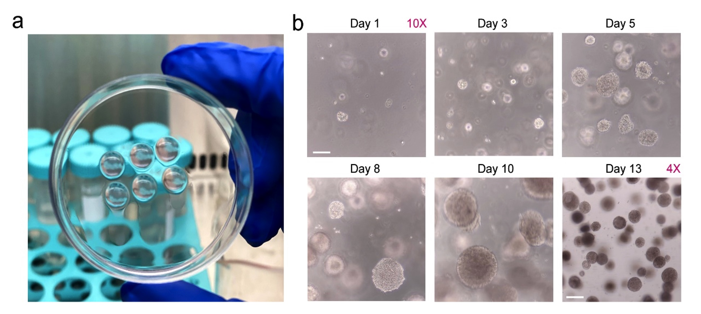

Undergraduate Projects
______________________________________________________
Research Projects
- Cloud Computing Project, Intelligent Safety Records Tracking Platform.(2020).
- Constructed and developed a real-time analytic platform using Python/Flask based on Microsoft Azure and MVC.
- Implemented data storage (over 1 million) by CosmosDB/NoSQL. Showed records on an interactive map by
Leaflet.js and trend by Plotly. Provided live/travel decision with statistical model, and notification by Azure Function.
- Designed a RESTful API using Node.js and Express.js to handle HTTP requests and responses.
- Evaluated system by Apache Bench. Boosted performance by Redis. Structured controller layer to achieve
asynchronous requests using REST API. Created and deployed Flask and Redis containers on AKS for scalability.
- 3D printed micro pillar array for high throughput drug screening.(2020). Supervisor: Prof. Nanjia Zhou.

Source: Peiran Zhu
- A preparation method and application of a biochip based on 3D printing photosensitive resin.. patent CN201911018455 (2020).
{kind=link}